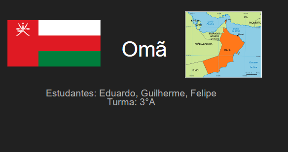
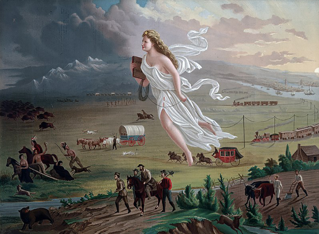
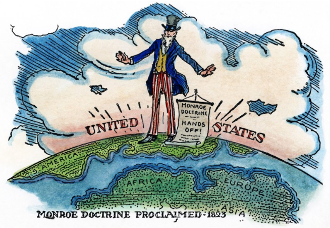
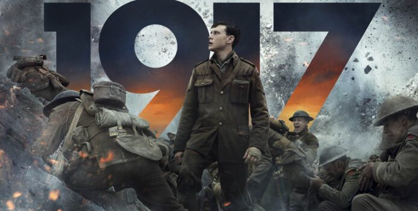

Objetivos: Nesta aula realizamos nosso Seminário sobre Geopolítica conforme as orientações da aula anterior.
PASSO 1 - Acompanhamos a introdução de nosso professor sobre as Ordens Mundiais, a partir das páginas 2, 3 e 4 do Capítulo nº 1 da plataforma GeekieOne como forma de abertura para nosso seminário.
PASSO 2 - Iniciamos a apresentação dos grupos comparando as diversas regiões geopolíticas visando comparar a atual conjuntura geopolítica com o histórico pregresso das ordens mundiais.
Competências e Habilidades: C2 H8 H10 H12 C6 H39
Link Atividade

Objetivos: Explicarmos como se deu o processo de consolidação do território norte-americano, bem como os princípios e doutrinas que o legitimaram, compreendendo a sociedade estadunidense ao longo do século XIX e o seu papel no imperialismo pós 2ª Revolução Industrial.
PASSO 1 - Como forma de introdução ao tema de nossa aula de hoje, assistimos ao vídeo em anexo sobre a Segregação Racial nos EUA e acompanhamos as discussões realizadas pelo nosso professor sobre o tema em questão.
PASSO 2 - A seguir, acompanhamos a explicação de nosso professor sobre a consolidação do território dos Estados Unidos, a Guerra de Secessão, as diferenças do sul e do norte dos EUA e as doutrinas que conduziam o pensamento norte-americano.
PASSO 3 - Analisamos a gravura e a pintura sobre o imperialismo estadunidense em anexo e respondemos as perguntas.
PASSO 4 - Realizamos as atividades da plataforma Geekie One, referentes ao Capítulo nº 4 - EUA no século XIX e o imperialismo.
Competências e habilidades: C3 H15 H16
Link n°1 da Atividade
Objetivos:Como forma de introduzir a temática da Grande Guerra assistimos o filme 1917. Nosso objetivo era relacionar a corrida imperialista e a fase neocolonialista, com a escalada de tensões que culminou na Grande Guerra mundial.
PASSO 1 - Acompanhamos a contextualização do filme e a relação com o momento histórico estudado em nossas duas últimas aulas.
PASSO 2 - Observamos o documento em anexo e, ao longo do filme, tomamos nota dos pontos que mais nos chamaram atenção, buscando responder as questões enquanto acompanhavamos o longa metragem.
Competências e habilidades: C3 H15 H16
Link Atividade